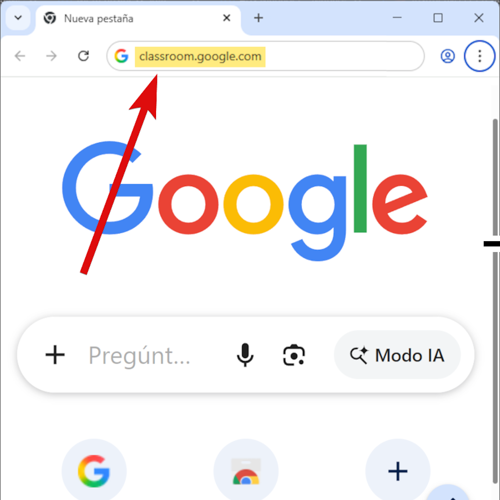
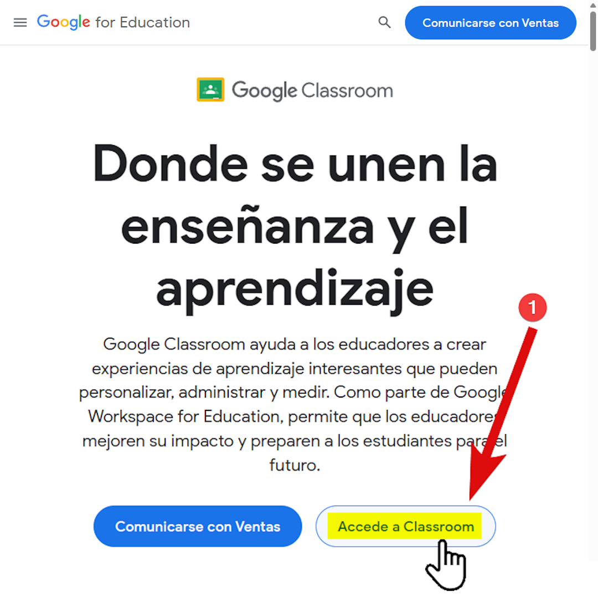
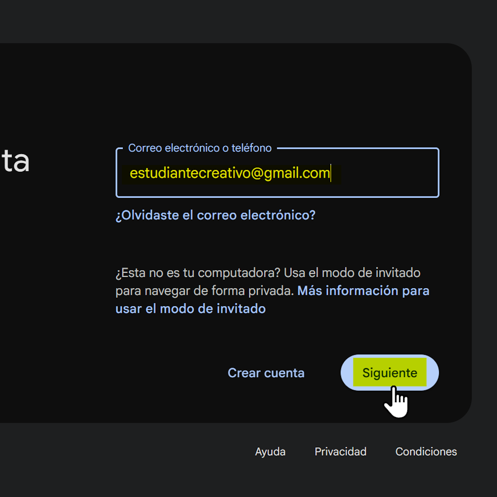
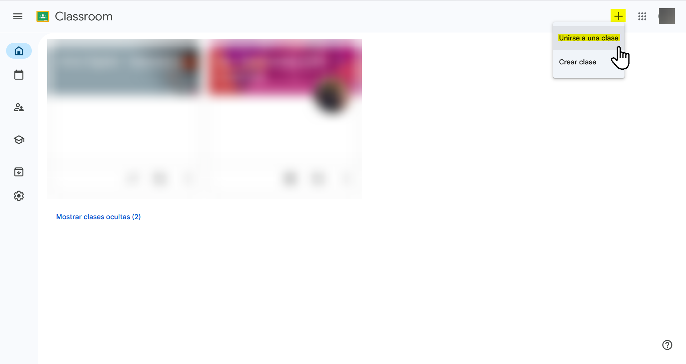
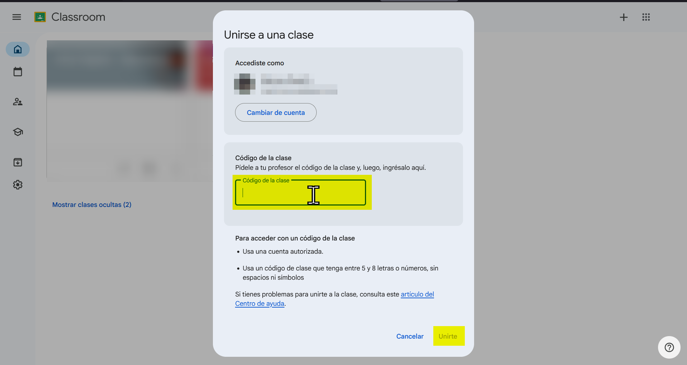
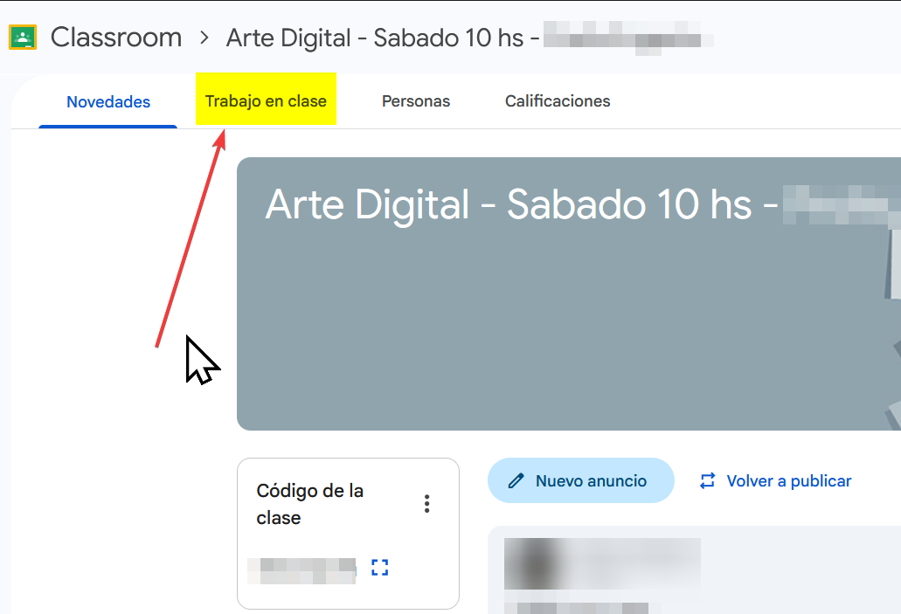
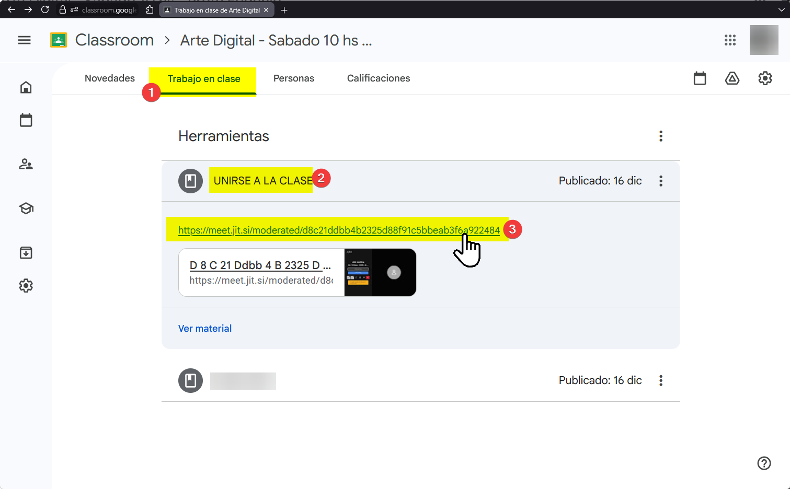
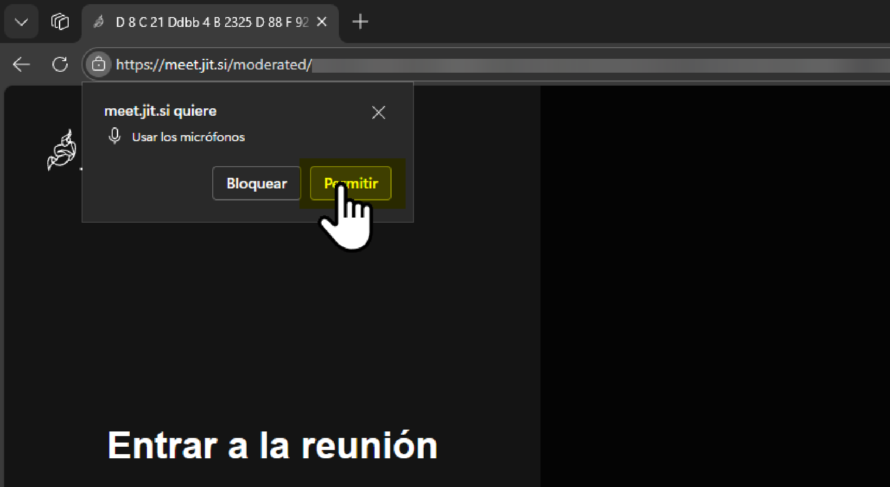
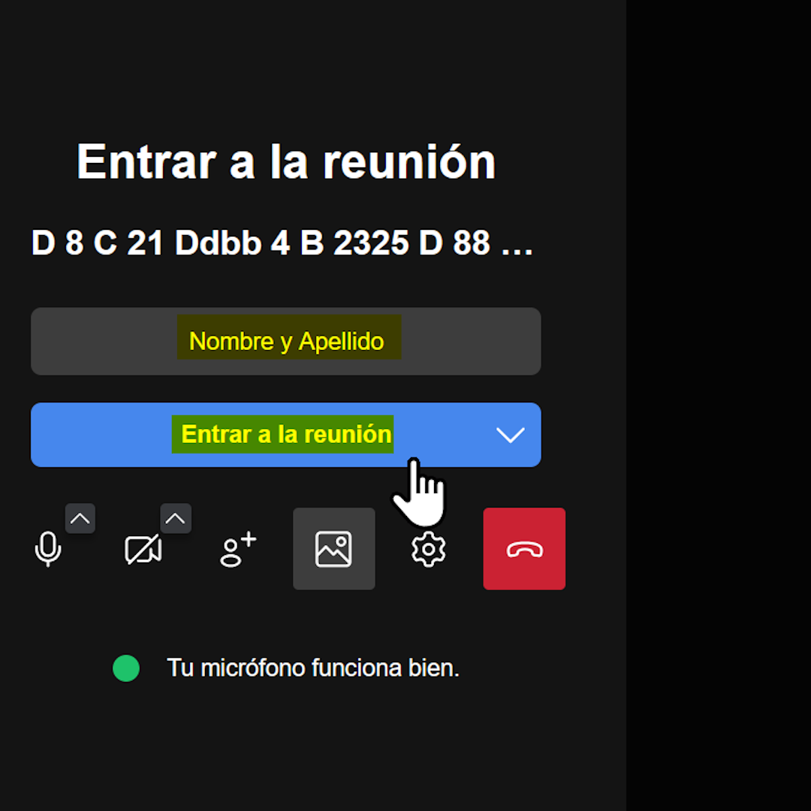

Manual del Estudiante: Acceso a Clases Virtuales
En nuestra computadora abrimos Chrome o Edge
En la barra de arriba debemos escribir "classroom.google.com" y pulsar ENTER. Es posible que al ingresar nos salga un aviso que debamos aceptar pulsando en "Continuar".
Esto suele aparecer sólo la primera vez que entramos
Si no tenemos, podemos crear una o usar la de un familiar!
busca el icono de MÁS (+) situado en la esquina superior derecha de la pantalla principal. Al hacer clic en el botón (+), se desplegarán dos opciones. Selecciona la que dice "Unirse a una clase".
Se abrirá un cuadro. Escribe el código alfanumérico que Cerebros Creativos o tu profesor te entregó. Luego haz clic en el botón azul "Unirte" abajo a la derecha.
Ya estás dentro del aula. Verás el nombre de tu trayecto. El enlace para unirse a la clase se encuentra en la sección "Trabajo en Clase". Aquí encontrarás, además todos los contenidos y las clases grabadas que tu profesor publique.
Busca la publicación "UNIRSE A LA CLASE" y haz click en ella para desplegarla. Verás un enlace que empieza por https://meet.jit.si/....
Cuando sea el día y la hora de iniciar, haz clic directamente sobre él para ingresar a la clase en vivo!
IMPORTANTE 👉 Usaremos el mismo link todas las semanas! Lo vas a encontrar siempre en el mismo lugar!
Al abrirse Jitsi, tu navegador te preguntará si permites usar la cámara. Haz clic en "Permitir" para poder participar en la clase.
Escribe tu nombre y apellido en el recuadro para que el profesor te identifique. Finalmente, presiona el botón azul "Entrar a la Reunión" (Join Meeting).
Ahora debemos esperar que sea la hora. Cuando el profe se conecte, la reunión comenzará automáticamente.
NO PULSAR "SOY EL ANFITRIÓN" ya que esto nos llevará a otra pantalla y podría expulsarnos de la sala!